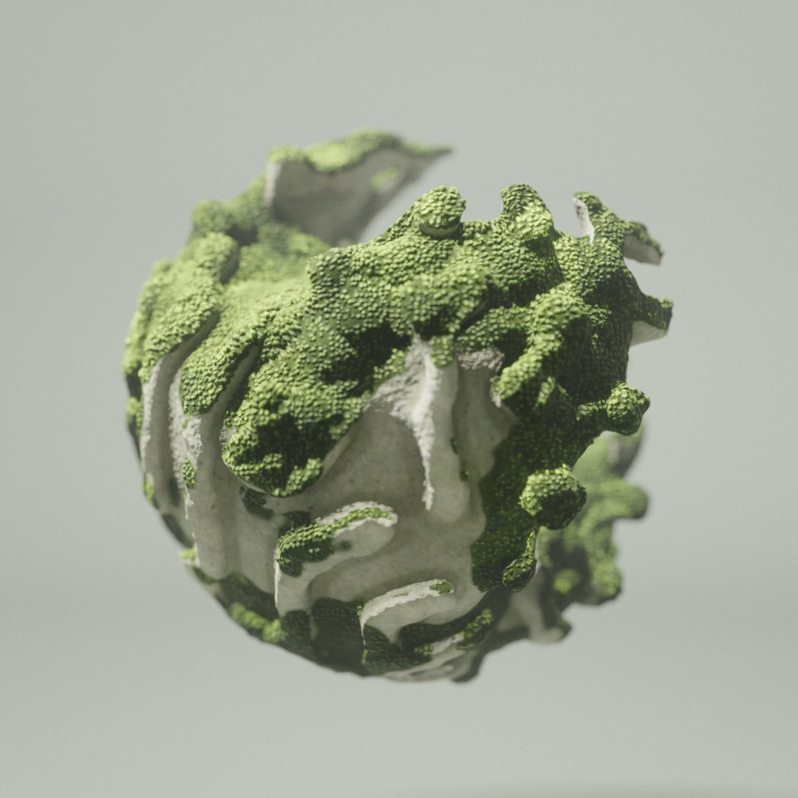

How Moss grows
A sculpture that nobody carved: a reaction left to run inside a sphere, a torus or a minimal surface until it settles into tunnels and ridges. Then moss finds the best spots on it and spreads. Here is how the stone is grown, how it becomes a mesh, and how the moss is made of slices.

Two chemicals in a box
Gray-Scott is the simplest recipe for growth that looks alive. Two substances, U and V, fill a volume. U is fed in everywhere at a steady rate; V feeds on it, two molecules of V turning one of U into more V, and is removed at its own rate. Both diffuse, U twice as fast. From a few random seeds of V, spots, worms and mazes appear and spread until they fill the space, and which of them depends only on the feed and kill rates.
The day runs it in 3D, in a 128³ volume (96³ on phones). WebGL2 cannot render into a 3D texture slice by slice cheaply, so the volume is a 2D atlas: one tile per z slice, sixteen tiles across and eight down. A single full-screen draw advances every voxel, reading its neighbours across tiles. The day takes 2600 steps, a few hundred per frame, as many as the device keeps up with.
The reaction runs only inside a shape. Outside it, U is marked as −1, and a neighbour there is read as the voxel itself: no flux through the edge. A wall of fixed values would line the surface with a skin of pattern; zero flux lets the pattern run straight out through it, so the tunnels open onto the surface as they would in a sponge.
U += dt · (Du ∇²U − U V² + F (1 − U))
V += dt · (Dv ∇²V + U V² − (F + k) V)
A slice through the reaction, and the solid it leaves
The same equations in 2D, on a grid the size of one slice of the day's volume, with its feed and kill rates and the same seeding. A 2D slice through a 3D lattice shows islands where the real one is connected above and below the cut. Lattice runs the reaction in a skin under the surface, so the middle stays empty; solid only lets it erode grooves Erosion deep.
Where there is V, there is air
When the reaction is done, one more pass turns it into a signed distance, in voxels, negative inside the stone. V is blurred by a voxel, compared with an iso level and scaled, so a voxel with little V is stone and one with a lot is a tunnel. That is then combined with the shape's own distance by smooth minimum and maximum, a voxel and a half wide, so every edge where pattern meets surface is rounded rather than cut.
The four structures are four ways of combining them. Lattice intersects the pattern with a hollow skin of the shape, so the result is a shell of tunnels around an empty middle. Coral grows the pattern over a solid core, a smaller copy of the shape. Sponge lets it fill the whole body. Solid keeps the shape whole and lets the pattern carve its surface only as deep as Erosion. The implicit shapes, the gyroid and its relatives, always get a thin solid core under the pattern too, so their tubes and sheets stay chunky instead of fraying into threads.
rd = (iso − blur(V)) · gain // −rd for pores
lattice: d = smax(smax(rd, s), −s − wall)
coral: d = smin(smax(rd, s), s + wall)
sponge: d = smax(rd, s)
solid: d = smax(s, smin(rd, s + erosion))
Meshed while it grows
The field goes to a worker, which builds the mesh with surface nets: one vertex per cell of the voxel lattice whose corners disagree on the sign, placed at the mean of the points where its edges cross zero, and one quad for every lattice edge that crosses. Surface nets gives a closed, well-shaped mesh with far fewer slivers than marching cubes. Three rounds of smoothing then move each vertex toward its neighbours along the surface only, and step it back onto the zero level, so the form keeps its shape while the voxel steps melt away.
A reaction this size leaves crumbs: tiny pieces that the pattern cut free. A union-find over the triangles drops every connected piece smaller than four percent of the largest. Nothing floats.
The worker also bakes what the shading will need. A curvature per vertex, from the umbrella operator smoothed over a few rings, tells ridges from hollows. An occlusion per vertex marches six directions around the normal through the field itself, with steps that grow by half each time and switch to halved copies of the field (keeping the most solid value) further out, so a deep tunnel is dark even where the screen-space AO cannot see into it.
A change of shape should not mean staring at a loading bar. While the reaction runs, the field is read back at half resolution every hundred milliseconds or so and meshed as a preview, on two workers so the previews overlap. The sculpture is seen growing out of noise into its final form in a couple of seconds, and only the last, full-resolution mesh gets the moss.
Best spots first
Moss settles where water and light stay: on tops, on faces that look out rather than into a tunnel, in the open. The mesher gives every vertex a score from those three, its height-facing normal counting most, plus a large-scale noise so the cover breaks into patches rather than a neat cap. Then it throws the score away and keeps the rank: the vertex's place in the sorted list, from 0 to 1.
The rank is what makes the controls exact. Overgrowth of 0.6 covers the vertices ranked above 0.4: six tenths of the surface, whatever the shape. Growth over time sweeps the same threshold down from 1, so the moss spreads from the best spots outward. Just ahead of the front, the stone is stained green.
A cross-section, ranked and overgrown
The moss is drawn five times as thick as in the day. Its thickness swells in cushions, one dome per cell of a Voronoi over the surface, and is fuller towards the best-ranked spots, so a patch is thin at its edge and deep in its middle.
The triangles are sorted too. The worker puts them in 32 bins by rank, highest first, so the moss draws only a prefix of the index buffer: at 30 percent cover, the shells skip seven tenths of the mesh without a single discarded fragment. Four species, each with its own colour, height and leaf shape, sit in large patches with small islands of another one inside.
A forest in slices
Moss is millions of shoots a millimetre across. No mesh could hold them, so the day draws them the way fur is often drawn: as shells. The sculpture's mesh is drawn again, instanced, up to 26 times, each copy pushed a little further out along its normals. Each shell is a slice through a 3D field of shoots, and keeps only the fragments where its slice cuts a shoot. Stacked, the slices read as a canopy.
The shoots are a tileable 3D Voronoi, baked once into a 64³ texture with eight cells per side: each cell is a shoot, the texture holds how close a point is to its stem, plus a random height and tint. A shoot is fat at the base and thin near its tip, and leaves come out of it as lobes, cut by the angle around the stem, from three to seven per species. Near the top the slice drifts downhill, so the tips droop over the edge of a cushion.
The bottom 40 percent of the thickness is not shells at all: the sculpture itself is displaced out by that much where the moss grows, a dense mat that the canopy stands on. Shells, mat and stone all render through the pipeline, so the moss casts soft shadows and takes AO and GI like any other surface.
Shells over a mat, side on
The shells used per tier: 6 on low, 8 on medium (phones), 18 on high and 26 for captures. With few layers, the gaps between them show as stripes. Jitter evaluates each fragment at a slice moved by up to half a layer, at random, so the stripes break into a fine grain that the pipeline's temporal accumulation then smooths.
Weathered, per pixel
A grown form with a perfect surface looks like plastic. The stone is shaded per pixel from noise in the sculpture's own space, so its detail turns with it, and every layer of detail fades out once a pixel covers half of its period, so nothing aliases at a distance. Weathering sets how far it has all gone.
Overcast, with mist
The light is a soft, overcast studio, a large key from above with a cool fill, through the shared photographic pipeline: PCSS shadows, screen-space AO and one bounce of indirect light, AgX tonemapping. The sculpture hovers over the floor, and its contact shadow softens with height through an analytic occluder that follows it.
The mist is the pipeline's composite pass, a full-screen shader over the lit image before bloom. It reads the depth buffer, rebuilds each pixel's position, and fades it toward a gradient of mist with distance, plus a layer that pools on the floor and thins with height. The far backdrop dissolves; the sculpture stays sharp. Depth of field is shallow by default, focused on the sculpture's front, so the moss on its far side goes soft as in a macro shot.
Controls
- Drag to orbit, scroll or pinch to zoom.
- Form: Shape, Structure, Pattern, Scale, Pattern size, Erosion, Variation, Tumble.
- Stone: Stone and Weathering.
- Moss: palette, Overgrowth, Depth, Shoots, Grow time, Regrow.
- Scene: Spin, Float, Aperture and Focus.
- Auto change brings a new sculpture every 15 seconds, by default.
- R randomises, G regrows the moss, Space pauses, Tab hides the panel, F goes fullscreen, P saves a screenshot.